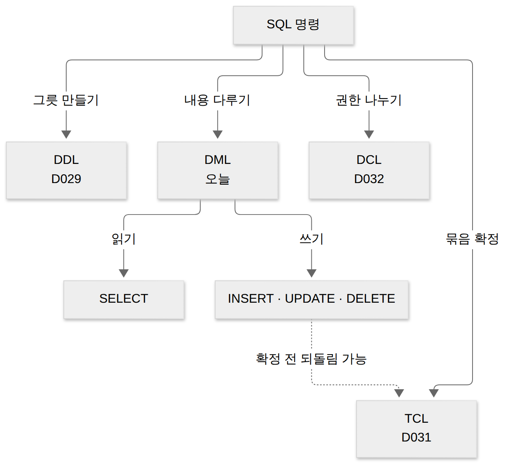
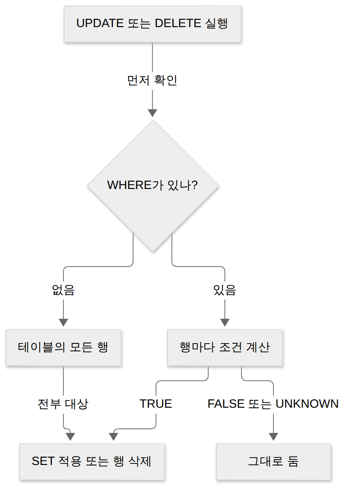
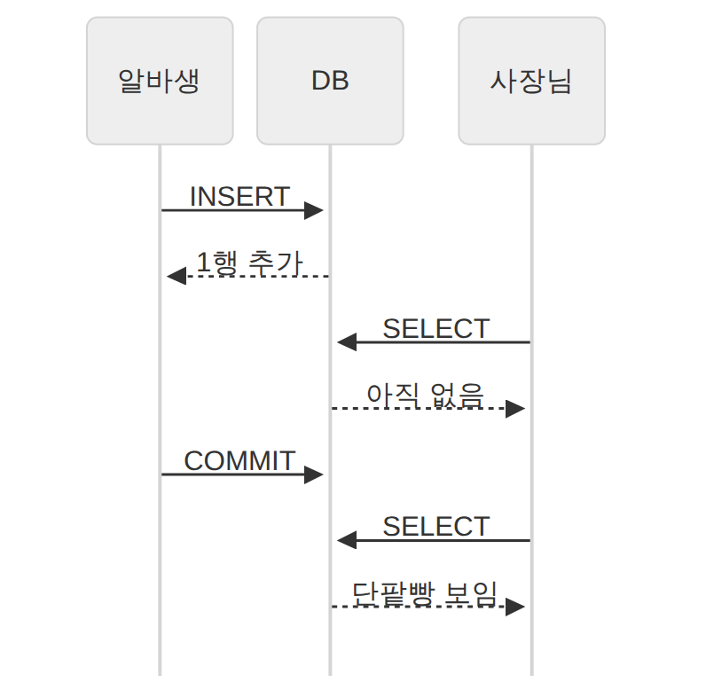
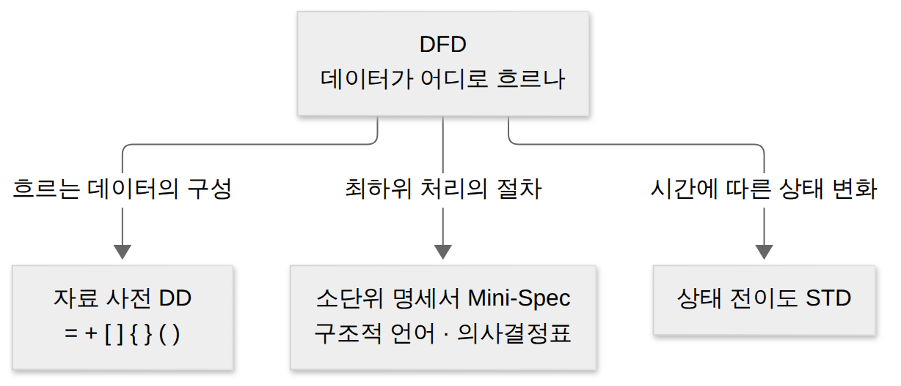

D033 · DML: SELECT 기본 구조·WHERE 연산자·실행 순서·INSERT/UPDATE/DELETE
B1 지난주 D029에서 테이블이라는 그릇을 만들었고(DDL), D031에서는 작업을 묶어 확정하는 법(TCL), 어제 D032에서는 누가 그 그릇을 만질 수 있는지(DCL)를 봤어요. 이제 드디어 그릇 안의 내용을 다룰 차례예요. 예시는 동네 빵집 ‘밀가루공방’ 주문 앱의 상품 테이블 하나로 끝까지 가요. 사장님은 아침마다 재고를 보고, 알바생은 신상품을 넣고, 저녁에는 품절 상품을 내려요.
- SELECT 기본 구조와 WHERE 연산자(BETWEEN·IN·LIKE·IS NULL)로 결과 행을 손으로 구할 수 있다
- INSERT·UPDATE·DELETE의 문법과 실행 결과를 추적할 수 있다
- 절의 논리적 처리 순서(FROM → WHERE → GROUP BY → HAVING → SELECT → ORDER BY)를 설명할 수 있다
- NULL 비교(= NULL vs IS NULL)와 와일드카드(% vs _) 함정을 구별할 수 있다
1. 큰 그림 — 그릇 안의 내용을 다루는 네 동사
D029에서 본 DDL은 테이블이라는 그릇의 모양(열 이름, 자료형, 제약조건)을 정했어요. 그런데 그릇만 있고 빵이 없으면 빵집이 아니죠. 실제 업무는 거의 전부 “행을 넣고, 찾고, 고치고, 지우는” 일이에요. 이 일을 맡은 갈래가 따로 있는 이유예요.
DML(Data Manipulation Language, 데이터 조작어)은 사용자가 데이터베이스에 저장된 데이터를 실질적으로 처리하는 데 쓰는 언어예요. 명령은 네 개뿐이에요. 이 중 SELECT만 데이터를 바꾸지 않고 읽기만 해요. DML 네 동사 중 셋은 손을 대고 하나는 눈만 대는 셈이에요. 사장님이 아침에 재고를 ‘보기만’ 하는 건 SELECT이고, 알바생이 진열대를 건드리는 순간부터는 INSERT·UPDATE·DELETE예요.
쓰기 세 동사는 다른 갈래와도 이어져요. 바꾼 내용은 COMMIT 전까지 ROLLBACK으로 되돌릴 수 있고(D031), 애초에 그 테이블에 대한 UPDATE 권한이 없으면 실행 자체가 거부돼요(D032). 오늘 지도는 이렇게 생겼어요.

오늘 내내 쓸 테이블이에요. 여섯 행 중 두 칸이 비어 있어요. 바닐라라떼는 재고를 아직 안 셌고, 마늘바게트는 가격표를 아직 안 붙였어요. 이 두 칸(NULL)이 장면 3과 확인 문제에서 계속 말썽을 부려요.
| 번호 | 이름 | 분류 | 가격 | 재고 |
|---|---|---|---|---|
| 1 | 소금빵 | 빵 | 3000 | 12 |
| 2 | 크림빵 | 빵 | 2500 | 0 |
| 3 | 바닐라라떼 | 음료 | 4500 | NULL |
| 4 | 마늘바게트 | 빵 | NULL | 5 |
| 5 | 소보로빵 | 빵 | 2000 | 8 |
| 6 | 아메리카노 | 음료 | 3500 | 20 |
본문에 반복해서 나오는 용어를 먼저 정리해 둘게요.
| 용어 | 뜻 | 빵집 예 |
|---|---|---|
| 행(row, 튜플) | 테이블의 가로 한 줄, 데이터 한 건 | 소금빵 한 줄 |
| 열(column, 속성) | 테이블의 세로 한 줄, 항목 하나 | 가격 열 |
| 결과 집합 | SELECT가 돌려주는 새 표 | 빵 네 개의 이름·재고 |
| 조건식 | 행마다 참·거짓을 따지는 식 | 분류 = '빵' |
| NULL | 값이 없음·아직 모름(0이나 빈 문자열과 다름) | 마늘바게트의 가격 |
| 와일드카드 | LIKE에서 “아무 글자”를 뜻하는 기호 % · _ | '%빵' |
→ 이 장면의 결과물: 네 동사와 테이블 한 장. 그래서 다음 장면은 가장 자주 쓰는 SELECT 문장을 절 단위로 뜯어봐요.
2. 장면 1 — SELECT 문장 해부: 무엇을, 어디서, 어떤 행만, 어떤 순서로
SELECT 열 FROM 테이블 [WHERE 조건] [ORDER BY 열]. 필수는 SELECT와 FROM이고, 나머지는 필요할 때 붙여요.사장님의 아침 질문은 “빵 종류만, 이름이랑 재고를, 재고 많은 순으로 보여 줘”예요. 이 한 문장에는 질문이 네 개 숨어 있어요. 무엇을 볼지, 어느 테이블에서 볼지, 어떤 행만 볼지, 어떤 순서로 볼지. SELECT 문장은 이 네 질문에 절(clause) 하나씩 대응해요.
SELECT 절은 결과에 나올 열을 정해요. 열 이름을 쉼표로 늘어놓고, 모든 열을 원하면 *를 써요. FROM 절은 어느 테이블에서 읽을지 정해요. 이 두 절이 SELECT 문의 뼈대라 빠질 수 없어요.
WHERE 절은 조건식이 참인 행만 남겨요. 생략하면 모든 행이 나와요. ORDER BY 절은 결과를 정렬하며, 오름차순 ASC가 기본이고 내림차순은 DESC를 붙여요. SELECT 문장은 카페 주문과 어순이 비슷해요. “아이스 아메리카노(무엇을), 테이크아웃으로(어디서)…” — 다만 DB는 이 주문을 적힌 순서대로 처리하지 않는다는 게 장면 5의 반전이에요.
SELECT 이름, 재고
FROM 상품
WHERE 분류 = '빵'
ORDER BY 재고 DESC;| 이름 | 재고 |
|---|---|
| 소금빵 | 12 |
| 소보로빵 | 8 |
| 마늘바게트 | 5 |
| 크림빵 | 0 |
이 문장은 표를 두 방향으로 잘라요. SELECT 뒤의 열 목록은 표를 세로로 잘라 필요한 열만 남기고, WHERE는 가로로 걸러 필요한 행만 남겨요. 관계대수에서는 앞의 것을 투영(π, Projection), 뒤의 것을 선택(σ, Selection)이라고 불러요. 이름이 헷갈리게도 SQL의 SELECT 절이 하는 일은 관계대수의 ‘선택’이 아니라 ‘투영’이에요. 관계대수는 B3(D041)에서 정식으로 다뤄요.
한 장 요약 — 절마다 맡은 일을 표로 모으면 이래요.
| 절 | 하는 일 | 생략 | 빵집 예 |
|---|---|---|---|
| SELECT | 결과에 나올 열(또는 계산식)을 고름 | 불가 | 이름, 재고 / * |
| FROM | 읽을 테이블을 정함 | 불가 | 상품 |
| WHERE | 조건이 참인 행만 남김 | 가능(전체 행) | 분류 = '빵' |
| ORDER BY | 결과 정렬(기본 ASC) | 가능(순서 보장 없음) | 재고 DESC |
→ 이 장면의 결과물: 네 절짜리 문장 하나. 그래서 다음 장면은 시험이 가장 좋아하는 WHERE 절의 연산자를 하나씩 봐요.
3. 장면 2 — WHERE의 연산자: 행을 거르는 체
장면 1에서 WHERE는 “참인 행만 남긴다”고 했어요. 그럼 조건식은 어떤 재료로 만들까요? 가장 기본은 비교 연산자예요. 같다 =, 다르다 <>(DBMS에 따라 !=도 허용), 크다 >, 크거나 같다 >= 같은 것들이죠. 문자열과 날짜는 작은따옴표로 감싸요.
BETWEEN — 범위
BETWEEN a AND b는 a 이상 b 이하, 즉 열 >= a AND 열 <= b와 같은 뜻이에요. 경계값 두 개를 모두 포함하는 닫힌 구간이에요. 출제자는 경계값 딱 그 숫자짜리 행을 꼭 하나 넣어 둬요. BETWEEN은 문 양쪽 기둥까지 집 안으로 쳐요.
작은 값을 앞에 써야 한다는 것도 중요해요. BETWEEN 3000 AND 2000은 “3000 이상이면서 2000 이하”라 그런 값이 없어요. 오류가 아니라 0건이 나와요. 부정형 NOT BETWEEN a AND b는 a 미만 또는 b 초과예요.
SELECT 이름, 가격 FROM 상품 WHERE 가격 BETWEEN 2000 AND 3000;
-- 소금빵 3000, 크림빵 2500, 소보로빵 2000 (경계 2000·3000 모두 포함, 3건)IN — 목록 중 하나
IN (값1, 값2, …)은 열 값이 목록 중 하나와 같으면 참이에요. 열 = 값1 OR 열 = 값2 OR …를 짧게 쓴 거예요. 목록에 테이블에 없는 값이 섞여 있어도 오류 없이 그냥 그 값과 맞는 행이 없을 뿐이에요.
SELECT 이름 FROM 상품 WHERE 이름 IN ('소금빵', '아메리카노', '식빵');
-- 소금빵, 아메리카노 (식빵은 없는 상품이라 매칭 0, 2건)LIKE — 글자 패턴
LIKE는 문자열이 패턴과 맞는지 봐요. 와일드카드는 두 개예요. %는 0글자 이상 아무 문자열, _(밑줄)은 정확히 한 글자예요. _는 ‘딱 한 자리 빈칸’이고 %는 ‘아무 길이 빈칸, 0칸도 OK’예요. 빈칸 채우기 시험으로 치면 _는 글자 수까지 채점하는 깐깐한 선생님이에요.
SELECT 이름 FROM 상품 WHERE 이름 LIKE '%빵'; -- 소금빵, 크림빵, 소보로빵
SELECT 이름 FROM 상품 WHERE 이름 LIKE '__빵'; -- 소금빵, 크림빵 (정확히 세 글자)
SELECT 이름 FROM 상품 WHERE 이름 LIKE '_금%'; -- 소금빵LIKE '%10\%%' ESCAPE '\'처럼 ESCAPE 문자를 지정해요. 시험에는 거의 안 나오니 이름만 기억해요.AND · OR · NOT — 조건 묶기
조건 여러 개는 논리 연산자로 묶어요. 우선순위는 NOT → AND → OR예요. 괄호 없는 AND·OR는 곱셈·덧셈과 같아요. AND가 곱셈처럼 먼저 묶이고, OR는 마지막에 덧셈처럼 모아요. 헷갈리면 괄호를 치면 되고, 괄호가 언제나 가장 먼저예요.
-- ① 괄호 없음: 분류 = '음료' OR (분류 = '빵' AND 재고 > 10) 으로 읽힘
SELECT 이름 FROM 상품 WHERE 분류 = '음료' OR 분류 = '빵' AND 재고 > 10;
-- 바닐라라떼, 아메리카노, 소금빵 (3건)
-- ② 괄호로 OR 먼저
SELECT 이름 FROM 상품 WHERE (분류 = '음료' OR 분류 = '빵') AND 재고 > 10;
-- 소금빵, 아메리카노 (2건 — 바닐라라떼는 재고 NULL이라 탈락)A OR B AND C를 왼쪽부터 (A OR B) AND C로 읽으면 틀려요. 언제나 A OR (B AND C)예요.한 장 요약 — 오늘 본 WHERE 연산자를 같은 뜻의 다른 표현과 함께 정리해요.
| 연산자 | 의미 | 같은 뜻 | 빵집 예 결과 |
|---|---|---|---|
BETWEEN 2000 AND 3000 | 2000 이상 3000 이하 | >= 2000 AND <= 3000 | 소금빵·크림빵·소보로빵 |
NOT BETWEEN 2000 AND 3000 | 2000 미만 또는 3000 초과 | < 2000 OR > 3000 | 바닐라라떼·아메리카노 |
IN ('소금빵', '식빵') | 목록 중 하나와 같음 | = '소금빵' OR = '식빵' | 소금빵 |
LIKE '%빵' | ‘빵’으로 끝남 | — | 소금빵·크림빵·소보로빵 |
LIKE '__빵' | 세 글자이고 ‘빵’으로 끝남 | — | 소금빵·크림빵 |
IS NULL | 값이 비어 있음 | (= NULL은 안 됨) | 가격: 마늘바게트 |
→ 이 장면의 결과물: 행을 거르는 체 여러 개. 그런데 위 ② 예에서 바닐라라떼가 조용히 빠졌어요. 그래서 다음 장면은 그 범인, NULL을 봐요.
4. 장면 3 — NULL: 모르는 값은 같지도 다르지도 않다
장면 2의 NOT BETWEEN 결과를 다시 보면 마늘바게트가 없어요. BETWEEN 결과에도 없었죠. “범위 안”에도 “범위 밖”에도 안 들어가는 행이 있다는 뜻이에요. 이건 가격이 NULL이기 때문이에요.
NULL은 값이 없거나 아직 알 수 없음을 나타내는 특별한 표시예요. 숫자 0도 아니고 빈 문자열 ''도 아니에요. NULL은 ‘0원’이 아니라 ‘가격표가 아직 안 붙은 빵’이에요. “이 빵 3000원이에요?”라고 물으면 점원은 ‘네’도 ‘아니요’도 못 하고 ‘몰라요’라고 할 수밖에 없어요.
그래서 SQL의 조건식은 참·거짓 두 값이 아니라 TRUE·FALSE·UNKNOWN 세 값을 써요(3값 논리). NULL이 끼어든 비교(=, <, BETWEEN, IN, LIKE 모두)는 UNKNOWN이 돼요. 그리고 WHERE는 TRUE인 행만 통과시키므로, UNKNOWN 행은 FALSE 행과 똑같이 걸러져요.
가장 유명한 함정이 = NULL이에요. 가격 = NULL은 “가격이 모르는 값과 같은가?”라는 질문이라, NULL이 아닌 행에서도 NULL인 행에서도 답은 UNKNOWN이에요. 결과는 언제나 0건이에요. 게다가 = NULL은 문법 오류도 안 나요. 조용히 0건을 돌려주니까, 출제자에게는 이보다 좋은 함정이 없어요.
NULL은 계산에도 번져요. NULL + 500은 NULL이고, NULL * 0도 NULL이에요. 모르는 값에 무엇을 더해도 여전히 모르는 값이니까요. 장면 6의 UPDATE에서 이 성질이 다시 나와요.
SELECT 이름 FROM 상품 WHERE 가격 < 3000; -- 크림빵, 소보로빵 (마늘바게트 없음)
SELECT 이름 FROM 상품 WHERE 가격 IS NULL; -- 마늘바게트
SELECT 이름 FROM 상품 WHERE 재고 IS NOT NULL; -- 바닐라라떼만 빠진 5건→ 이 장면의 결과물: 세 값 논리와 IS NULL. 이제 행을 정확히 고를 수 있으니, 다음 장면은 고른 결과를 보기 좋게 다듬어요.
5. 장면 4 — DISTINCT·별칭·ORDER BY: 결과를 다듬는 손질
장면 3까지로 원하는 행과 열은 뽑았어요. 그런데 사장님이 “우리 가게 분류가 뭐뭐 있지?”라고 물으면 SELECT 분류 FROM 상품은 빵·빵·음료·빵·빵·음료 여섯 줄을 돌려줘요. 답은 맞는데 보기엔 불편하죠. 결과를 다듬는 도구가 필요해요.
DISTINCT는 SELECT 바로 뒤에 써서 결과에서 똑같은 행을 하나만 남겨요. 기준은 열 하나가 아니라 SELECT에 적은 열 전체 조합이에요. SELECT DISTINCT 분류, 가격이면 (분류, 가격) 쌍이 같아야 중복이에요. 반대말 ALL은 기본값이라 보통 생략해요.
별칭(AS)은 결과 열에 새 이름을 붙여요. 가격 + 1000 AS 배달가처럼 계산식 열에 특히 유용하고, AS는 생략해도 돼요. 별칭은 결과 표의 머리글을 바꿀 뿐 테이블 열 이름은 그대로예요.
ORDER BY는 결과를 정렬해요. 기본은 오름차순(ASC)이고, 정렬 키를 여러 개 쓰면 앞 키가 같은 행끼리만 뒤 키로 순서를 정해요. 방향은 키마다 따로라 ORDER BY 분류, 가격 DESC는 분류 오름차순, 가격 내림차순이에요. 열 이름 대신 SELECT 목록의 순번(ORDER BY 2)이나 별칭을 써도 돼요.
SELECT DISTINCT 분류 FROM 상품; -- 빵, 음료
SELECT 이름, 가격 + 1000 AS 배달가
FROM 상품
WHERE 가격 IS NOT NULL
ORDER BY 분류, 가격 DESC;
-- 소금빵 4000, 크림빵 3500, 소보로빵 3000, 바닐라라떼 5500, 아메리카노 4500ORDER BY를 아예 안 쓰면 결과 순서는 정해져 있지 않아요. 결과 순서는 ‘그날 DB 기분’이라, 어제 1등이던 행이 오늘 3등으로 나와도 DB는 약속을 어긴 게 아니에요. 순서가 중요하면 반드시 ORDER BY를 써야 해요.
→ 이 장면의 결과물: 다듬어진 결과 표. 그런데 왜 별칭을 ORDER BY에서는 쓸 수 있을까요? 다음 장면의 처리 순서가 그 답이에요.
6. 장면 5 — 적는 순서와 처리 순서
SQL은 영어 문장처럼 “무엇을 보고 싶다”부터 말하게 생겼어요. 하지만 DBMS 입장에서는 재료(테이블)가 없으면 아무것도 고를 수 없어요. 그래서 적는 순서와 논리적 처리 순서가 달라요. 요리 레시피도 ‘완성 사진’(SELECT)부터 보여 주지만, 실제로는 장보기(FROM)부터 하고 플레이팅(ORDER BY)으로 끝내죠.
각 단계는 바로 앞 단계가 넘긴 중간 결과만 받아서 일해요. 단계별로 하는 일은 이래요.
- FROM — 대상 테이블을 가져와요. 상품 6행 전부가 작업대에 올라와요.
- WHERE — 행마다 조건을 따져 TRUE인 행만 남겨요. 여기서 버려진 행은 뒤에서 되살아나지 않아요.
- GROUP BY — 남은 행을 같은 값끼리 묶어요(내일 D034).
- HAVING — 묶음에 조건을 걸어요(내일 D034).
- SELECT — 열을 고르고 계산식을 만들어요. 별칭은 여기서 태어나요. DISTINCT도 이 단계예요.
- ORDER BY — 마지막에 결과를 정렬해요.
이 순서를 알면 별칭 규칙이 저절로 풀려요. 별칭은 5단계 SELECT에서 태어나요. 2단계 WHERE 시점에는 아직 그 이름이 없어서 WHERE 배달가 > 3000은 오류가 나요. 아직 굽지도 않은 빵에 이름표를 붙일 수는 없죠. 반대로 6단계 ORDER BY는 SELECT 다음이라 ORDER BY 배달가가 돼요.
한 장 요약 — 단계마다 받는 것과 넘기는 것, 별칭 사용 가능 여부예요.
| 단계 | 받는 것 | 넘기는 것 | SELECT 별칭 |
|---|---|---|---|
| 1 FROM | 테이블 | 모든 행 | 모름 |
| 2 WHERE | 모든 행 | 조건이 TRUE인 행 | 모름(오류) |
| 3 GROUP BY | 남은 행 | 그룹 | 모름(표준) |
| 4 HAVING | 그룹 | 조건 맞는 그룹 | 모름(표준) |
| 5 SELECT | 행 또는 그룹 | 고른 열·계산식 | 여기서 탄생 |
| 6 ORDER BY | 결과 표 | 정렬된 결과 | 사용 가능 |
→ 이 장면의 결과물: 읽기 쪽 이야기 끝. 그래서 다음 장면은 테이블 내용을 바꾸는 쓰기 세 동사로 넘어가요.
7. 장면 6 — INSERT · UPDATE · DELETE: 쓰는 세 동사
INSERT INTO … VALUES, UPDATE … SET … WHERE, DELETE FROM … WHERE. UPDATE·DELETE에서 WHERE를 빼면 모든 행이 대상이에요.지금까지는 사장님처럼 보기만 했어요. 이제 알바생 차례예요. 신상품 단팥빵이 들어왔고, 음료 가격이 올랐고, 크림빵은 오늘 다 팔렸어요. 각각 INSERT, UPDATE, DELETE가 맡아요.
INSERT — 행 넣기
INSERT는 테이블에 새 행을 추가해요. 문법은 INSERT INTO 테이블 (열1, 열2, …) VALUES (값1, 값2, …)예요. 열 목록과 값 목록은 순서대로 짝을 이뤄요. 열 목록에 없는 열은 NULL이 들어가고, 테이블에 DEFAULT 값이 정해져 있으면 그 값이 들어가요(NOT NULL 열을 빼먹으면 오류).
열 목록을 통째로 생략할 수도 있어요. 그러면 테이블을 정의한 열 순서대로 모든 열의 값을 다 적어야 해요. 다른 테이블의 SELECT 결과를 한꺼번에 넣는 INSERT INTO 테이블 SELECT … 형태도 있어요.
INSERT INTO 상품 (번호, 이름, 분류, 가격) VALUES (7, '단팥빵', '빵', 2200);
-- 재고는 목록에 없어서 NULL
INSERT INTO 상품 VALUES (8, '우유', '음료', 1800, 30);
-- 열 목록 생략: 다섯 열 모두 정의 순서대로UPDATE — 값 고치기
UPDATE는 이미 있는 행의 값을 바꿔요. 문법은 UPDATE 테이블 SET 열 = 값 [, 열 = 값 …] [WHERE 조건]예요. SET의 오른쪽에는 상수뿐 아니라 기존 값을 쓴 계산식도 올 수 있어요. 이때 기존 값이 NULL이면 장면 3의 규칙대로 계산 결과도 NULL로 남아요.
UPDATE 상품 SET 가격 = 가격 + 300 WHERE 분류 = '음료';
-- 바닐라라떼 4500 → 4800, 아메리카노 3500 → 3800
UPDATE 상품 SET 재고 = 재고 + 10 WHERE 분류 = '음료';
-- 아메리카노 20 → 30, 바닐라라떼는 NULL + 10 = NULL 그대로DELETE — 행 지우기
DELETE는 조건에 맞는 행을 통째로 지워요. 문법은 DELETE FROM 테이블 [WHERE 조건]이에요. 행 단위로 지우기 때문에 SELECT처럼 열 이름을 적는 자리가 없어요. 테이블 구조는 그대로 남고, DML이라 COMMIT 전이면 ROLLBACK으로 되살릴 수 있어요. D029의 TRUNCATE(전체 행 삭제, DDL)·DROP(테이블째 삭제, DDL)과 갈리는 지점이에요.
DELETE FROM 상품 WHERE 재고 = 0; -- 크림빵 1행 삭제UPDATE와 DELETE도 대상 행을 고를 때 SELECT의 WHERE와 똑같은 체를 써요. 그래서 NULL 때문에 UNKNOWN이 된 행은 바뀌지도 지워지지도 않아요. 그리고 WHERE를 아예 빼면 묻지도 따지지도 않고 모든 행이 대상이에요. WHERE 없는 DELETE는 ‘품절 상품 내려 주세요’를 ‘상품 내려 주세요’로 잘못 들은 알바생이에요. 진열대(구조)는 남고 빵은 전부 사라져요.

UPDATE 상품 SET 가격 = 0;과 DELETE FROM 상품;은 오류가 아니라 전체 행에 적용돼요. 시험에서는 “일부만 바뀐다”는 선지로 나와요.DELETE 이름 FROM 상품은 틀린 문법이에요. DELETE는 행을 지우므로 열을 적지 않아요. 특정 칸만 비우려면 UPDATE … SET 열 = NULL이에요.쓰기 동사는 실행 즉시 모두에게 보이지 않아요. 알바생 세션에서 바꾼 내용은 COMMIT해야 확정되고 다른 사람의 SELECT에 보여요. 그 전에 ROLLBACK하면 없던 일이 돼요. 그리고 상품 테이블에 INSERT 권한이 없는 계정이면 처음부터 거부돼요(D032).

한 장 요약 — 쓰기 세 동사를 나란히 놓으면 이래요.
| 동사 | 문법 뼈대 | WHERE 생략 시 | 되돌리기 |
|---|---|---|---|
| INSERT | INSERT INTO 테이블 (열…) VALUES (값…) | WHERE 없음(행을 새로 만듦) | COMMIT 전 ROLLBACK |
| UPDATE | UPDATE 테이블 SET 열 = 값 WHERE … | 모든 행 수정 | COMMIT 전 ROLLBACK |
| DELETE | DELETE FROM 테이블 WHERE … | 모든 행 삭제, 구조는 남음 | COMMIT 전 ROLLBACK |
→ 이 장면의 결과물: 네 동사 전부. 오늘 새 범위는 여기까지고, 다음은 지난 오답 다섯 개를 다시 봐요.
8. 오답 복습 — 정렬 복잡도 · XP 가치 · DFD 도구
세 문항(S03-4·5·6)은 모두 정렬의 최선·최악을 묻는 문제였어요. 표를 외우기보다 각 정렬이 어떻게 움직이는지 떠올리면 표가 저절로 나와요. 자세한 동작은 S03에 있어요.
선택 정렬은 매 회전마다 남은 원소를 끝까지 훑어 최솟값을 찾아요. 이미 정렬된 입력이어도 “혹시 모르니” 끝까지 다시 보기 때문에 비교 횟수가 언제나 n(n−1)/2예요. 선택 정렬은 줄이 이미 키 순서여도 매번 끝까지 다시 재는 꼼꼼한 반장이에요.
삽입 정렬은 새 원소를 왼쪽의 정렬된 부분에 끼워 넣는데, 왼쪽 이웃이 자기보다 작으면 바로 멈춰요. 그래서 거의 정렬된 입력에서는 원소마다 한 번씩만 비교하고 끝나 최선 O(n)이에요. 눈치 빠른 반장이죠. 반대로 거꾸로 정렬된 입력이면 매번 맨 앞까지 가서 O(n²)이에요.
병합 정렬은 입력이 어떻든 늘 반으로 나누고 합쳐요. 그래서 최선·평균·최악 모두 O(n log n)이에요. 힙 정렬도 힙을 만들고 하나씩 꺼내는 과정이 입력과 무관해 세 경우 모두 O(n log n)이에요. 퀵 정렬은 평균 O(n log n)이지만 피벗이 계속 한쪽 끝이면 최악 O(n²)이 돼요.
XP 핵심 가치(D030-2)는 의사소통·단순성·피드백·용기·존중 다섯 개예요. 짧은 반복마다 고객과 테스트에서 피드백을 받는 것이 XP의 심장이라 피드백이 빠질 수 없어요. 헷갈리는 건 스크럼 다섯 가치(확약·집중·공개·용기·존중)와 섞을 때예요. 용기·존중은 둘 다에 있고, 확약·집중·공개는 스크럼에만 있어요. 원래 개념은 D003에 있어요.
자료 사전과 소단위 명세서(D030-3)는 둘 다 DFD를 보완하는 구조적 분석 도구지만 적는 대상이 달라요. 자료 사전(DD)은 DFD 화살표 위로 흐르는 데이터의 구성 항목을 = + [ ] { } ( ) 기호로 정의해요. 소단위 명세서(Mini-Spec)는 더 이상 쪼개지지 않는 최하위 처리(동그라미)가 입력을 출력으로 바꾸는 절차를 구조적 언어·의사결정표 등으로 적어요. 자세한 그림은 D004에 있어요.

한 장 요약 — 다섯 문항을 가르는 질문이에요.
| 항목 | 가르는 질문 |
|---|---|
| S03-4 거의 정렬된 자료 | 왼쪽이 작으면 바로 멈추는 정렬은? (최선 O(n)은 하나뿐) |
| S03-5 최악 보장 | 최악 칸에 n²이 없는 정렬은? (입력과 무관하게 반으로 나누나) |
| S03-6 선택 정렬 | 정렬된 입력에서도 끝까지 훑나? (그렇다면 비교 횟수 고정) |
| D030-2 XP 가치 | 그 가치가 스크럼 전용(확약·집중·공개)인가, XP 다섯 개 안에 있나? |
| D030-3 DFD 보완 도구 | 적는 대상이 데이터의 구성인가, 처리의 절차인가? |
9. 시험 포인트 한 장 + 다음 예고
오늘 여섯 장면을 밀가루공방 하나로 다시 꿰면 아래 표가 돼요. 시험 문제는 대부분 이 표의 오른쪽 칸 하나를 살짝 비틀어 내요.
| 장면 | 하는 일 | 시험 개념 | 결과물 |
|---|---|---|---|
| 큰 그림 | 네 동사 나누기 | DML = SELECT·INSERT·UPDATE·DELETE | 읽기 1 · 쓰기 3 |
| 장면 1 | 문장 해부 | SELECT·FROM 필수, WHERE·ORDER BY 선택 | 네 절 문장 |
| 장면 2 | 행 거르기 | BETWEEN 양 끝 포함, IN, LIKE % · _, NOT → AND → OR | 조건식 |
| 장면 3 | 모르는 값 | 3값 논리, = NULL은 0건, IS NULL | NULL 행 처리 |
| 장면 4 | 결과 손질 | DISTINCT, AS, ORDER BY 기본 ASC·여러 키 | 정리된 결과 |
| 장면 5 | 처리 순서 | FROM → WHERE → GROUP BY → HAVING → SELECT → ORDER BY | 별칭 규칙 |
| 장면 6 | 쓰기 | INSERT 열 목록, UPDATE SET, DELETE FROM, WHERE 생략 = 전체 | 바뀐 테이블 |
내일 D034는 오늘 처리 순서 그림에서 회색으로 비워 둔 3·4단계, GROUP BY와 HAVING, 그리고 COUNT·SUM·AVG 같은 집계 함수예요. 집계 함수가 NULL을 어떻게 다루는지도 오늘 배운 UNKNOWN과 이어져요.
확인 문제 (채점 완료 · 4/7)
1~2번은 오늘 범위, 3~7번은 오답 재확인이에요. 1·2번은 아래 처음 상태의 상품 테이블 기준이에요.
| 번호 | 이름 | 분류 | 가격 | 재고 |
|---|---|---|---|---|
| 1 | 소금빵 | 빵 | 3000 | 12 |
| 2 | 크림빵 | 빵 | 2500 | 0 |
| 3 | 바닐라라떼 | 음료 | 4500 | NULL |
| 4 | 마늘바게트 | 빵 | NULL | 5 |
| 5 | 소보로빵 | 빵 | 2000 | 8 |
| 6 | 아메리카노 | 음료 | 3500 | 20 |
SELECT 이름 FROM 상품 WHERE 가격 BETWEEN 2500 AND 3500 OR 재고 = NULL;의 결과 행 수는?정답·해설
③ 3행 — 크림빵(2500)·소금빵(3000)·아메리카노(3500). BETWEEN은 양 끝 포함.재고 = NULL은 바닐라라떼 행에서도 UNKNOWN이라 아무 행도 못 찾아요 → NULL은IS NULL로만. (진수 님 ④ —= NULL이 NULL 행을 잡는다는 함정)- 다음 두 문장을 차례로 실행한 뒤
상품에 남은 행 수는?UPDATE 상품 SET 가격 = 가격 + 500 WHERE 분류 = '빵' AND 재고 > 0;DELETE FROM 상품 WHERE 가격 >= 3500;정답·해설
② 3행 — UPDATE로 소금빵 3500·소보로빵 2500, 마늘바게트는 NULL+500 = NULL. DELETE(>= 3500)로 소금빵·라떼·아메리카노 삭제, 마늘바게트는 비교가 UNKNOWN이라 남음 → 크림빵·마늘바게트·소보로빵. - 학번순으로 정렬된 출석부 맨 끝에 전학생 한 명(가장 큰 학번)이 추가됐다. 다시 정렬할 때 원소마다 왼쪽 이웃과 한 번씩만 비교하고 끝나 가장 적은 비교로 마치는 정렬은?
정답·해설
③ 삽입 정렬 — 왼쪽 이웃이 더 작으면 바로 멈춰서 정렬된 입력은 O(n). 선택 정렬은 최솟값을 확인하려고 매번 남은 원소를 끝까지 훑어야 해서 언제나 n(n−1)/2. (진수 님 ② — S03-4 재확인 실패, 재시작) - 퀵 정렬이 최악의 경우 O(n²)이 되는 것이 걱정돼 다른 정렬로 바꾸려 한다. 입력 순서와 관계없이 최악의 경우에도 O(n log n)을 보장하는 정렬은?
정답·해설
① 병합 정렬 — 늘 반으로 나눠 합쳐서 최선·평균·최악 O(n log n). (S03-5 D+1 통과) - 선택 정렬에 대한 설명으로 옳은 것은?
정답·해설
④ 입력과 무관하게 n(n−1)/2 — ①은 삽입 정렬의 최선. (진수 님 ① — S03-6 재확인 실패, 3번과 같은 뿌리: 선택·삽입 최선 혼동) - XP(eXtreme Programming)의 5가지 핵심 가치에 속하는 것은?
정답·해설
② 피드백 — XP 5가치 = 의사소통·단순성·피드백·용기·존중. 확약·집중·공개는 스크럼. (D030-2 재시작 D+1 통과) - DFD에서 더 이상 분해되지 않는 최하위 처리(프로세스)가 입력 데이터를 출력으로 바꾸는 절차를 구조적 언어·의사결정표 등으로 서술하는 도구는?
정답·해설
① 소단위 명세서 — 최하위 프로세스의 처리 절차. 자료 사전은 데이터 항목 정의. (D030-3 재시작 D+1 통과)
고른 뒤 답안 복사 → 디스코드 공부 채널에 붙여넣기 하면 돼요.
답장: 정처기 D033: 1)번호 2)번호 3)번호 4)번호 5)번호 6)번호 7)번호
1·2번은 표를 옆에 두고 행마다 TRUE·FALSE·UNKNOWN을 적어 가며 풀면 실수가 줄어요. D031·D032 답장도 편할 때 함께 보내 주세요.